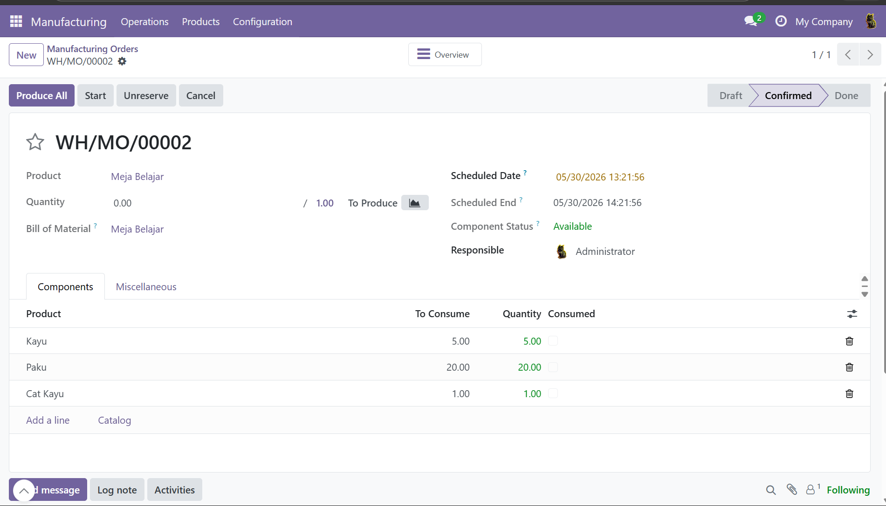

Implementasi modul Manufacturing pada Odoo untuk mengelola proses produksi, Bill of Materials (BoM), Work Order, dan monitoring bahan baku secara terintegrasi.
Pada project ini saya mempelajari alur produksi pada sistem ERP, pembuatan Bill of Materials (BoM), pembuatan Manufacturing Order, serta integrasi antara modul Manufacturing dan Inventory di Odoo.